library (tidyverse)
library (gt)
library (lubridate)6 Datas e horas com LUBRIDATE
6.1 Introdução
A seguir temos vários exemplos de manipulação de variáveis data e hora utilizando o pacote LUBRIDATE do R. Para saber mais sobre este pacote, acesse:
https://cran.r-project.org/package=lubridate.
Aviso
Para melhor utilizar este material, é importante que você tenha uma introdução à linguagem R e saiba carregar pacotes (packages) no R. Para mais informações acesse:
Para os exemplos, iremos carregar os seguintes pacotes:
tidyverse
gt
lubridate
6.2 Tipos de objetos de data e hora
6.2.0.1 Datetime
Uma variável do tipo “datetime” (data e hora) representa um ponto na linha do tempo armazenado em um número que representa o número de segundos desde 01-01-1970 00:00:00 (UTC).
Nota
Universal Time Coordinated (UTC), é uma escala coordenada de tempo, mantida pelo “Bureau International des Poids et Mesures (BIPM)”. Até 1972, era chamado de (GTM ou Greenwich Mean Time). É também conhecida como “Z time” ou “Zulu Time”.
6.2.0.2 Date
Quando nos referimos à uma variável “date”(data), significa que ela armazena um número inteiro que representa o número de dias desde 01-01-1970.
6.2.0.3 Time
Quando nos referimos à uma variável “time” (tempo em segundos), ela armazena um número inteiro que representa o número de segundos desde às 00:00:00 (hms).
Para os vários exemplos a seguir, utilizaremos os seguintes objetos data e hora:
dt <- as_datetime(1511870400)
d <- as_date(17498)
t <-hms::as_hms(85)
dt; d; t[1] "2017-11-28 12:00:00 UTC"[1] "2017-11-28"00:01:25
Dica
Os objetos gerados pela maioria das funções do lubridate usam os padrões POSIXct, POSIXlt, Date, Period ou objetos que podem ser convertidos para o POSIXlt. Para maiores informações sobre estas classes, digite:
?DateTimeClasses
POSIXct: armazena segundos desde 01-01-1970 00:00:00 (Unix epoch) POSIXlt: armazena uma lista de dia, mês, ano, hora, min, segundos, etc.
6.2.1 Exemplos da Folha de Referência
A maioria dos exemplos, visam ajudar na interpretação dos exemplos e funções encontradas na Folha de Referência do lubridate disponível no site do RStudio.
Nota
Em geral, ao final de cada comando, as vezes você verá a chamada à função gt(). Isto é apenas para a formatação da tabela de saída e não é necessário para que você entenda os comandos precedentes. Em alguns casos, onde o volume de dados de saída pode ser extenso, usamos também a função head() para mostrar apenas as linhas iniciais. Quando o exemplo possui muitas colunas de saída, eventualmente utilizamos a função select() para selecionar apenas algumas colunas.
Em alguns casos usaremos funções de manipulação de dados do pacote dplyr, como mutate () ou count().
Nota
O termo data-frame descrito ao longo deste texto, é utilizado de forma livre para objetos do tipo data.frame, tibble, entre outros. Pense como se fosse uma tabela de um banco de dados e/ou uma planilha do MS Excel, contendo linhas e colunas. Apesar de não ser rigorosamente igual à uma tabela, muitas vezes usaremos estes termos de forma intercambiável para facilitar o entendimento de iniciantes.
6.3 Validando Data e Hora
O pacote lubridate possui uma série de funções para obter e definir os elementos de ano, mês, dia, hora, minuto e segundos de um objeto data e hora.
Use as funções a seguir servem para identificar estes elementos em seus dados a partir de uma string. Cada uma delas aceita o argumento “tz” para definir o fuso-horário (timezone), se este não for definido, UTC é utilizado.
Estas funções são nomeadas conforme a tabela abaixo e sua ordem obedece tal nomenclatura:
| Elemento | Letra |
|---|---|
| y | ano (year) |
| m | mês (month) |
| d | dia (day) |
| h | hora (hour) |
| m | minuto (minute) |
| s | segundos (seconds) |
Por exemplo, para criar um objeto datetime passando a string “2017-11-28T14:02:00”, utilzamos a função ymd_hms(). Isto porque ao montar a string de data e hora, colocamos como ordem o ano, mês, dia, hora, minuto e segundo.
ymd_hms("2017-11-28T14:02:00")[1] "2017-11-28 14:02:00 UTC"Se passarmos a string trocando o ano pela dia, devemos usar a função dmy_hms():
dmy_hms("28-11-2017T14:02:00")[1] "2017-11-28 14:02:00 UTC"
Nota
Veja que tanto a função ymd_hms() quanto a dmy_hms(), geraram o mesmo objeto datetime. Se quisermos obter o valor inteiro que representa este objeto desde 01-01-1970 00:00:00, podemos usar a função decimal_date()
Veja o código abaixo com mais alguns exemplos das funções validando os elementos da string passada para a função:
# ymd_hms(), ymd_hm(), ymd_h().
ymd_hms("2017-11-28T14:02:00") |> print()[1] "2017-11-28 14:02:00 UTC"# ydm_hms(), ydm_hm(), ydm_h().
ydm_hms("2017-22-12 10:00:00") |> print()[1] "2017-12-22 10:00:00 UTC"# mdy_hms(), mdy_hm(), mdy_h().
mdy_hms("11/28/2017 1:02:03") |> print()[1] "2017-11-28 01:02:03 UTC"# dmy_hms(), dmy_hm(), dmy_h().
dmy_hms("1 Jan 2017 23:59:59")|> print()[1] "2017-01-01 23:59:59 UTC"# ymd(), ydm().
ymd(20170131)|> print()[1] "2017-01-31"# mdy(), myd().
mdy("July 4th, 2000")|> print()[1] "2000-07-04"# dmy(), dym().
dmy("4th of July '99")|> print()[1] "1999-07-04"# yq() Q para quartil.
yq("2001: Q3")|> print()[1] "2001-07-01"# my(), ym().
my("07-2020")|> print()[1] "2020-07-01"#hms::hms() ou lubridate::hms(), ms() ou hm() para períodos.
hms::hms(sec = 0, min = 1, hours = 2)02:01:006.3.1 Outras funções úteis
6.3.1.1 date_decimal
Use para converter um número decimala para data e hora:
date_decimal(2017.5)[1] "2017-07-02 12:00:00 UTC"6.3.1.2 now
Use para obter um objeto data e hora do instante:
now(tzone = "America/Sao_Paulo")[1] "2022-08-24 19:04:13 -03"
Importante
Se o fuso-horário (tzone =) não for informado, a função utilizará aquele utilzado pelo sitema operacional em execução.
6.3.1.3 today
Use para obter a data atual.
today()[1] "2022-08-24"6.3.1.4 fast_strptime
Use para converter vetores de caracteres para objetos data e hora (POSIXlt) de forma rápida.
fast_strptime('9/1/01', '%y/%m/%d')[1] "2009-01-01 UTC"6.3.1.5 parse_date_time
Use para converter vetores de caracteres para objetos data e hora (POSIXct) de forma mais simplificada.
parse_date_time("19/1/1", "ymd")[1] "2019-01-01 UTC"6.4 Obtendo e Definindo Componentes de Data e Hora
Use as funções abaixo para obter um componente de um objeto data e hora.
# Obter o "DIA" de um objeto "datetime"
day(dt)[1] 28# Obter a "DATA"
date(dt)[1] "2017-11-28"# Obter a "ANO".
# Para obter o "ANO ISO 8610 use isoyear()
# Para obter o "ANO Epidemiológico use epiyear()
year(dt)[1] 2017# Obter o "MÊS".
# Use argumentos label= e addr= para obter o nome ou abreviação do mês.
month(dt)[1] 11# Obter o "DIA DA SEMANA".
# Use argumentos label= e addr= para obter o nome ou abreviação do dia.
wday(dt, label = TRUE) [1] ter
Levels: dom < seg < ter < qua < qui < sex < sáb# Obter o "DIA DO TRIMESTRE".
qday(dt) [1] 59# Obter a HORA".
hour(dt)[1] 12# Obter os "MINUTOS".
minute(dt)[1] 0# Obter os "SEGUNDOS".
second(dt)[1] 0# Obter o "FUSO-HORÁRIO.
tz(dt)[1] "UTC"# Obter a "SEMANA DO ANO".
week(dt)[1] 48# ara obter a "SEMANA DO ANO" ISO 8160 use isoyear()
# Para obter a "SEMANA DO ANO" Epidemiológico use epiyear()
# Obter o "TRIMESTRE".
quarter(dt)[1] 4# Obter o "SEMESTRE".
semester(dt)[1] 2# Saber se é "MANHÃ (am).
am(dt)[1] FALSE# Saber se é "TARDE" (pm).
pm(dt)[1] TRUE# Saber se é "HORÁRIO DE VERÃO"
dst(d)[1] FALSE# Saber se é "ANO BISEXTO"
leap_year(d)[1] FALSEPara definir um componente de um objeto, podemos utilzar as funções acima, porém com o sinal de atribuição.
Por exemplo, para alterar o dia de “28” do objeto “d”, para dia “1”, podemos fazer:
day(d) |> print() [1] 28day(d) <- 1
print(d) [1] "2017-11-01"Podemos também atualizar um componente do objeto data e hora:
# Atualizar um componente do objeto
update(dt, mday = 2, hour = 1)[1] "2017-11-02 01:00:00 UTC"O exemplo acima, altera o dia do mês para 2 e a hora para 01.
6.5 Arredondando Data e Hora
Use as funções a seguir para “arredondar” ou aproximar um objeto data e hora para unidades de ajuste. As unidades válidas são:
- second, minute, hour, day, week, month, bimonth, quarter, season, halfyear e year.
6.5.0.1 floor_date
Use para “arredondar para baixo” a data e hora para a unidade mais próxima.
Por exemplo, digamos que temos um objeto data = “2017-11-28” e queremos arredondar para baixo, sendo que a unidade é mês, ou seja, arredondar para o início do mês:
floor_date(dt, unit="month")[1] "2017-11-01 UTC"round_date
Use para “arredondar” a data para a unidade mais próxima.
round_date(dt, unit="month")[1] "2017-12-01 UTC"Veja que no exemplo acima, como tínhamos dia 28/11 e pedimos para arredondar na unidade “month”, ele arredondou para o mês 01/12.
Se o dia fosse 14/11, a função arredondaria para 01/11.
6.5.0.2 ceiling_date
Use para “arredondar para cima” a data e hora para a unidade mais próxima.
ceiling_date(dt, unit="month")[1] "2017-12-01 UTC"6.6 Imprimindo data e hora
Em alguns casos, desejamos imprimir um objeto data e hora de uma maneira específica e/ou mais amigável. O pacote lubridate tem a capacidade de utilizar “templates” e ainda permite modificá-los para customizar como a impressão do objeto será feita.
6.6.0.1 stamp
Use para criar um “template” mais amigável à partir de uma string de exemplo. Veja também as função stamp_date() e stamp_time() que são funções específicas para lidar com datas e horas respectivamente.
Em geral criamos uma função que utiliza a função stamp() e depois a utilizamos em nosso script passando o objeto data e hora. Veja este exemplo:
sf <- stamp("Criado terça-feira, 17 de janeiro de 2022 às 3:34")
sf(ymd("2020-04-05"))[1] "Criado domingo-feira, 05 de abril de 2020 às 00:00"
Dica
Procure usar o dia maior que 12 na hora de criar o template. Isto facilita para função distinguir que parte do template é o mês e qual parte é o dia.
6.7 Fuso-Horários
O R reconhece ~600 fuso-horários. Cada um deles, tem iformações sobre o fuso-horário, horário de verão e variações de calendário históricas de uma área. O R define apenas um fuso-horário por vetor.
Use o fuso=horário “UTC” para evitar horários-de-verão nos objetos.
Para obter uma lista dos fuso-horários disponíveis, use:
OlsonNames() [1] "Africa/Abidjan" "Africa/Accra"
[3] "Africa/Addis_Ababa" "Africa/Algiers"
[5] "Africa/Asmara" "Africa/Asmera"
[7] "Africa/Bamako" "Africa/Bangui"
[9] "Africa/Banjul" "Africa/Bissau"
[11] "Africa/Blantyre" "Africa/Brazzaville"
[13] "Africa/Bujumbura" "Africa/Cairo"
[15] "Africa/Casablanca" "Africa/Ceuta"
[17] "Africa/Conakry" "Africa/Dakar"
[19] "Africa/Dar_es_Salaam" "Africa/Djibouti"
[21] "Africa/Douala" "Africa/El_Aaiun"
[23] "Africa/Freetown" "Africa/Gaborone"
[25] "Africa/Harare" "Africa/Johannesburg"
[27] "Africa/Juba" "Africa/Kampala"
[29] "Africa/Khartoum" "Africa/Kigali"
[31] "Africa/Kinshasa" "Africa/Lagos"
[33] "Africa/Libreville" "Africa/Lome"
[35] "Africa/Luanda" "Africa/Lubumbashi"
[37] "Africa/Lusaka" "Africa/Malabo"
[39] "Africa/Maputo" "Africa/Maseru"
[41] "Africa/Mbabane" "Africa/Mogadishu"
[43] "Africa/Monrovia" "Africa/Nairobi"
[45] "Africa/Ndjamena" "Africa/Niamey"
[47] "Africa/Nouakchott" "Africa/Ouagadougou"
[49] "Africa/Porto-Novo" "Africa/Sao_Tome"
[51] "Africa/Timbuktu" "Africa/Tripoli"
[53] "Africa/Tunis" "Africa/Windhoek"
[55] "America/Adak" "America/Anchorage"
[57] "America/Anguilla" "America/Antigua"
[59] "America/Araguaina" "America/Argentina/Buenos_Aires"
[61] "America/Argentina/Catamarca" "America/Argentina/ComodRivadavia"
[63] "America/Argentina/Cordoba" "America/Argentina/Jujuy"
[65] "America/Argentina/La_Rioja" "America/Argentina/Mendoza"
[67] "America/Argentina/Rio_Gallegos" "America/Argentina/Salta"
[69] "America/Argentina/San_Juan" "America/Argentina/San_Luis"
[71] "America/Argentina/Tucuman" "America/Argentina/Ushuaia"
[73] "America/Aruba" "America/Asuncion"
[75] "America/Atikokan" "America/Atka"
[77] "America/Bahia" "America/Bahia_Banderas"
[79] "America/Barbados" "America/Belem"
[81] "America/Belize" "America/Blanc-Sablon"
[83] "America/Boa_Vista" "America/Bogota"
[85] "America/Boise" "America/Buenos_Aires"
[87] "America/Cambridge_Bay" "America/Campo_Grande"
[89] "America/Cancun" "America/Caracas"
[91] "America/Catamarca" "America/Cayenne"
[93] "America/Cayman" "America/Chicago"
[95] "America/Chihuahua" "America/Coral_Harbour"
[97] "America/Cordoba" "America/Costa_Rica"
[99] "America/Creston" "America/Cuiaba"
[101] "America/Curacao" "America/Danmarkshavn"
[103] "America/Dawson" "America/Dawson_Creek"
[105] "America/Denver" "America/Detroit"
[107] "America/Dominica" "America/Edmonton"
[109] "America/Eirunepe" "America/El_Salvador"
[111] "America/Ensenada" "America/Fort_Nelson"
[113] "America/Fort_Wayne" "America/Fortaleza"
[115] "America/Glace_Bay" "America/Godthab"
[117] "America/Goose_Bay" "America/Grand_Turk"
[119] "America/Grenada" "America/Guadeloupe"
[121] "America/Guatemala" "America/Guayaquil"
[123] "America/Guyana" "America/Halifax"
[125] "America/Havana" "America/Hermosillo"
[127] "America/Indiana/Indianapolis" "America/Indiana/Knox"
[129] "America/Indiana/Marengo" "America/Indiana/Petersburg"
[131] "America/Indiana/Tell_City" "America/Indiana/Vevay"
[133] "America/Indiana/Vincennes" "America/Indiana/Winamac"
[135] "America/Indianapolis" "America/Inuvik"
[137] "America/Iqaluit" "America/Jamaica"
[139] "America/Jujuy" "America/Juneau"
[141] "America/Kentucky/Louisville" "America/Kentucky/Monticello"
[143] "America/Knox_IN" "America/Kralendijk"
[145] "America/La_Paz" "America/Lima"
[147] "America/Los_Angeles" "America/Louisville"
[149] "America/Lower_Princes" "America/Maceio"
[151] "America/Managua" "America/Manaus"
[153] "America/Marigot" "America/Martinique"
[155] "America/Matamoros" "America/Mazatlan"
[157] "America/Mendoza" "America/Menominee"
[159] "America/Merida" "America/Metlakatla"
[161] "America/Mexico_City" "America/Miquelon"
[163] "America/Moncton" "America/Monterrey"
[165] "America/Montevideo" "America/Montreal"
[167] "America/Montserrat" "America/Nassau"
[169] "America/New_York" "America/Nipigon"
[171] "America/Nome" "America/Noronha"
[173] "America/North_Dakota/Beulah" "America/North_Dakota/Center"
[175] "America/North_Dakota/New_Salem" "America/Nuuk"
[177] "America/Ojinaga" "America/Panama"
[179] "America/Pangnirtung" "America/Paramaribo"
[181] "America/Phoenix" "America/Port_of_Spain"
[183] "America/Port-au-Prince" "America/Porto_Acre"
[185] "America/Porto_Velho" "America/Puerto_Rico"
[187] "America/Punta_Arenas" "America/Rainy_River"
[189] "America/Rankin_Inlet" "America/Recife"
[191] "America/Regina" "America/Resolute"
[193] "America/Rio_Branco" "America/Rosario"
[195] "America/Santa_Isabel" "America/Santarem"
[197] "America/Santiago" "America/Santo_Domingo"
[199] "America/Sao_Paulo" "America/Scoresbysund"
[201] "America/Shiprock" "America/Sitka"
[203] "America/St_Barthelemy" "America/St_Johns"
[205] "America/St_Kitts" "America/St_Lucia"
[207] "America/St_Thomas" "America/St_Vincent"
[209] "America/Swift_Current" "America/Tegucigalpa"
[211] "America/Thule" "America/Thunder_Bay"
[213] "America/Tijuana" "America/Toronto"
[215] "America/Tortola" "America/Vancouver"
[217] "America/Virgin" "America/Whitehorse"
[219] "America/Winnipeg" "America/Yakutat"
[221] "America/Yellowknife" "Antarctica/Casey"
[223] "Antarctica/Davis" "Antarctica/DumontDUrville"
[225] "Antarctica/Macquarie" "Antarctica/Mawson"
[227] "Antarctica/McMurdo" "Antarctica/Palmer"
[229] "Antarctica/Rothera" "Antarctica/South_Pole"
[231] "Antarctica/Syowa" "Antarctica/Troll"
[233] "Antarctica/Vostok" "Arctic/Longyearbyen"
[235] "Asia/Aden" "Asia/Almaty"
[237] "Asia/Amman" "Asia/Anadyr"
[239] "Asia/Aqtau" "Asia/Aqtobe"
[241] "Asia/Ashgabat" "Asia/Ashkhabad"
[243] "Asia/Atyrau" "Asia/Baghdad"
[245] "Asia/Bahrain" "Asia/Baku"
[247] "Asia/Bangkok" "Asia/Barnaul"
[249] "Asia/Beirut" "Asia/Bishkek"
[251] "Asia/Brunei" "Asia/Calcutta"
[253] "Asia/Chita" "Asia/Choibalsan"
[255] "Asia/Chongqing" "Asia/Chungking"
[257] "Asia/Colombo" "Asia/Dacca"
[259] "Asia/Damascus" "Asia/Dhaka"
[261] "Asia/Dili" "Asia/Dubai"
[263] "Asia/Dushanbe" "Asia/Famagusta"
[265] "Asia/Gaza" "Asia/Harbin"
[267] "Asia/Hebron" "Asia/Ho_Chi_Minh"
[269] "Asia/Hong_Kong" "Asia/Hovd"
[271] "Asia/Irkutsk" "Asia/Istanbul"
[273] "Asia/Jakarta" "Asia/Jayapura"
[275] "Asia/Jerusalem" "Asia/Kabul"
[277] "Asia/Kamchatka" "Asia/Karachi"
[279] "Asia/Kashgar" "Asia/Kathmandu"
[281] "Asia/Katmandu" "Asia/Khandyga"
[283] "Asia/Kolkata" "Asia/Krasnoyarsk"
[285] "Asia/Kuala_Lumpur" "Asia/Kuching"
[287] "Asia/Kuwait" "Asia/Macao"
[289] "Asia/Macau" "Asia/Magadan"
[291] "Asia/Makassar" "Asia/Manila"
[293] "Asia/Muscat" "Asia/Nicosia"
[295] "Asia/Novokuznetsk" "Asia/Novosibirsk"
[297] "Asia/Omsk" "Asia/Oral"
[299] "Asia/Phnom_Penh" "Asia/Pontianak"
[301] "Asia/Pyongyang" "Asia/Qatar"
[303] "Asia/Qostanay" "Asia/Qyzylorda"
[305] "Asia/Rangoon" "Asia/Riyadh"
[307] "Asia/Saigon" "Asia/Sakhalin"
[309] "Asia/Samarkand" "Asia/Seoul"
[311] "Asia/Shanghai" "Asia/Singapore"
[313] "Asia/Srednekolymsk" "Asia/Taipei"
[315] "Asia/Tashkent" "Asia/Tbilisi"
[317] "Asia/Tehran" "Asia/Tel_Aviv"
[319] "Asia/Thimbu" "Asia/Thimphu"
[321] "Asia/Tokyo" "Asia/Tomsk"
[323] "Asia/Ujung_Pandang" "Asia/Ulaanbaatar"
[325] "Asia/Ulan_Bator" "Asia/Urumqi"
[327] "Asia/Ust-Nera" "Asia/Vientiane"
[329] "Asia/Vladivostok" "Asia/Yakutsk"
[331] "Asia/Yangon" "Asia/Yekaterinburg"
[333] "Asia/Yerevan" "Atlantic/Azores"
[335] "Atlantic/Bermuda" "Atlantic/Canary"
[337] "Atlantic/Cape_Verde" "Atlantic/Faeroe"
[339] "Atlantic/Faroe" "Atlantic/Jan_Mayen"
[341] "Atlantic/Madeira" "Atlantic/Reykjavik"
[343] "Atlantic/South_Georgia" "Atlantic/St_Helena"
[345] "Atlantic/Stanley" "Australia/ACT"
[347] "Australia/Adelaide" "Australia/Brisbane"
[349] "Australia/Broken_Hill" "Australia/Canberra"
[351] "Australia/Currie" "Australia/Darwin"
[353] "Australia/Eucla" "Australia/Hobart"
[355] "Australia/LHI" "Australia/Lindeman"
[357] "Australia/Lord_Howe" "Australia/Melbourne"
[359] "Australia/North" "Australia/NSW"
[361] "Australia/Perth" "Australia/Queensland"
[363] "Australia/South" "Australia/Sydney"
[365] "Australia/Tasmania" "Australia/Victoria"
[367] "Australia/West" "Australia/Yancowinna"
[369] "Brazil/Acre" "Brazil/DeNoronha"
[371] "Brazil/East" "Brazil/West"
[373] "Canada/Atlantic" "Canada/Central"
[375] "Canada/Eastern" "Canada/Mountain"
[377] "Canada/Newfoundland" "Canada/Pacific"
[379] "Canada/Saskatchewan" "Canada/Yukon"
[381] "CET" "Chile/Continental"
[383] "Chile/EasterIsland" "CST6CDT"
[385] "Cuba" "EET"
[387] "Egypt" "Eire"
[389] "EST" "EST5EDT"
[391] "Etc/GMT" "Etc/GMT-0"
[393] "Etc/GMT-1" "Etc/GMT-10"
[395] "Etc/GMT-11" "Etc/GMT-12"
[397] "Etc/GMT-13" "Etc/GMT-14"
[399] "Etc/GMT-2" "Etc/GMT-3"
[401] "Etc/GMT-4" "Etc/GMT-5"
[403] "Etc/GMT-6" "Etc/GMT-7"
[405] "Etc/GMT-8" "Etc/GMT-9"
[407] "Etc/GMT+0" "Etc/GMT+1"
[409] "Etc/GMT+10" "Etc/GMT+11"
[411] "Etc/GMT+12" "Etc/GMT+2"
[413] "Etc/GMT+3" "Etc/GMT+4"
[415] "Etc/GMT+5" "Etc/GMT+6"
[417] "Etc/GMT+7" "Etc/GMT+8"
[419] "Etc/GMT+9" "Etc/GMT0"
[421] "Etc/Greenwich" "Etc/UCT"
[423] "Etc/Universal" "Etc/UTC"
[425] "Etc/Zulu" "Europe/Amsterdam"
[427] "Europe/Andorra" "Europe/Astrakhan"
[429] "Europe/Athens" "Europe/Belfast"
[431] "Europe/Belgrade" "Europe/Berlin"
[433] "Europe/Bratislava" "Europe/Brussels"
[435] "Europe/Bucharest" "Europe/Budapest"
[437] "Europe/Busingen" "Europe/Chisinau"
[439] "Europe/Copenhagen" "Europe/Dublin"
[441] "Europe/Gibraltar" "Europe/Guernsey"
[443] "Europe/Helsinki" "Europe/Isle_of_Man"
[445] "Europe/Istanbul" "Europe/Jersey"
[447] "Europe/Kaliningrad" "Europe/Kiev"
[449] "Europe/Kirov" "Europe/Lisbon"
[451] "Europe/Ljubljana" "Europe/London"
[453] "Europe/Luxembourg" "Europe/Madrid"
[455] "Europe/Malta" "Europe/Mariehamn"
[457] "Europe/Minsk" "Europe/Monaco"
[459] "Europe/Moscow" "Europe/Nicosia"
[461] "Europe/Oslo" "Europe/Paris"
[463] "Europe/Podgorica" "Europe/Prague"
[465] "Europe/Riga" "Europe/Rome"
[467] "Europe/Samara" "Europe/San_Marino"
[469] "Europe/Sarajevo" "Europe/Saratov"
[471] "Europe/Simferopol" "Europe/Skopje"
[473] "Europe/Sofia" "Europe/Stockholm"
[475] "Europe/Tallinn" "Europe/Tirane"
[477] "Europe/Tiraspol" "Europe/Ulyanovsk"
[479] "Europe/Uzhgorod" "Europe/Vaduz"
[481] "Europe/Vatican" "Europe/Vienna"
[483] "Europe/Vilnius" "Europe/Volgograd"
[485] "Europe/Warsaw" "Europe/Zagreb"
[487] "Europe/Zaporozhye" "Europe/Zurich"
[489] "Factory" "GB"
[491] "GB-Eire" "GMT"
[493] "GMT-0" "GMT+0"
[495] "GMT0" "Greenwich"
[497] "Hongkong" "HST"
[499] "Iceland" "Indian/Antananarivo"
[501] "Indian/Chagos" "Indian/Christmas"
[503] "Indian/Cocos" "Indian/Comoro"
[505] "Indian/Kerguelen" "Indian/Mahe"
[507] "Indian/Maldives" "Indian/Mauritius"
[509] "Indian/Mayotte" "Indian/Reunion"
[511] "Iran" "Israel"
[513] "Jamaica" "Japan"
[515] "Kwajalein" "Libya"
[517] "MET" "Mexico/BajaNorte"
[519] "Mexico/BajaSur" "Mexico/General"
[521] "MST" "MST7MDT"
[523] "Navajo" "NZ"
[525] "NZ-CHAT" "Pacific/Apia"
[527] "Pacific/Auckland" "Pacific/Bougainville"
[529] "Pacific/Chatham" "Pacific/Chuuk"
[531] "Pacific/Easter" "Pacific/Efate"
[533] "Pacific/Enderbury" "Pacific/Fakaofo"
[535] "Pacific/Fiji" "Pacific/Funafuti"
[537] "Pacific/Galapagos" "Pacific/Gambier"
[539] "Pacific/Guadalcanal" "Pacific/Guam"
[541] "Pacific/Honolulu" "Pacific/Johnston"
[543] "Pacific/Kanton" "Pacific/Kiritimati"
[545] "Pacific/Kosrae" "Pacific/Kwajalein"
[547] "Pacific/Majuro" "Pacific/Marquesas"
[549] "Pacific/Midway" "Pacific/Nauru"
[551] "Pacific/Niue" "Pacific/Norfolk"
[553] "Pacific/Noumea" "Pacific/Pago_Pago"
[555] "Pacific/Palau" "Pacific/Pitcairn"
[557] "Pacific/Pohnpei" "Pacific/Ponape"
[559] "Pacific/Port_Moresby" "Pacific/Rarotonga"
[561] "Pacific/Saipan" "Pacific/Samoa"
[563] "Pacific/Tahiti" "Pacific/Tarawa"
[565] "Pacific/Tongatapu" "Pacific/Truk"
[567] "Pacific/Wake" "Pacific/Wallis"
[569] "Pacific/Yap" "Poland"
[571] "Portugal" "PRC"
[573] "PST8PDT" "ROC"
[575] "ROK" "Singapore"
[577] "Turkey" "UCT"
[579] "Universal" "US/Alaska"
[581] "US/Aleutian" "US/Arizona"
[583] "US/Central" "US/East-Indiana"
[585] "US/Eastern" "US/Hawaii"
[587] "US/Indiana-Starke" "US/Michigan"
[589] "US/Mountain" "US/Pacific"
[591] "US/Samoa" "UTC"
[593] "W-SU" "WET"
[595] "Zulu" 6.7.0.1 Sys.timezone
Use para obter o fuso-horário atual, use:
Sys.timezone()[1] "America/Sao_Paulo"6.7.0.2 with_tz
Use para obter o mesmo objeto data e hora em um novo fuso-horário (novo relógio).
with_tz(dt, tzone = "US/Alaska")[1] "2017-11-28 03:00:00 AKST"6.7.0.3 local_time
Para saber a diferença entre fuso-horários, podemos usar a função local_time e definir a unidade. Por exemplo:
local_time(dt, tz = "US/Alaska", units = "hours")Time difference of 3 hours6.7.0.4 force_tz
Use para obter o mesmo objeto data e hora em um novo fuso-horário (novo data e hora).
force_tz(dt, "US/Pacific")[1] "2017-11-28 12:00:00 PST"6.8 Matemática com Data e Hora
6.8.1 Introdução
O pacote lubridate fornece três classes de intervalo de tempo para fazer cálculos com data e hora.
Períodos: Acompanham mudanças no horário do relógio, isto ignora irregularidades na “linha do tempo”.
Durações: Acompanham a passagem do “tempo físico”, o que diverge do horário do relógio quando irregularidades na “linha do tempo” acontecem.
Intervalos: Representam um intervalo específico da “linha do tempo”, limitado pelo início e fim da data e hora.
Este três formas de enchergam a “linha do tempo” é necessário pois cálculos de data e hora usando a “linha do tempo” são inconsistentes.
Sabemos que nem todos os anos têm 365 dias, com no caso do ano bi-sexto. Ou no caso de minutos de um retorno do horário de verão tem 60 segundos.
Pense nos seguintes cenários:
Se tivermos um dia normal, a “linha do tempo” ficaria algo como:
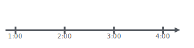
nor <- ymd_hms("2018-01-01 01:30:00",tz="US/Eastern")
print(nor)[1] "2018-01-01 01:30:00 EST"Já, quando o horário de verão se inicia, termos o seguinte cenário na linha do tempo:
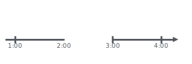
gap <- ymd_hms("2018-03-11 01:30:00",tz="US/Eastern")Quando o horário então se encerra, temos na linha do tempo este cenário:

lap <- ymd_hms("2018-11-04 00:30:00",tz="US/Eastern")E ainda temos o “ano-bisexto”, que também causa inconsistência na linha do tempo:
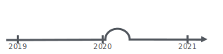
leap <- ymd("2019-03-01")Para os casos acima, criamos quarto objetos data e hora: nor, gap, lap e leap para representar cada cenário de inconsistência na linha do tempo.
Agora veremos com as três classes do lubridate citadas anteriormente reagem em cada situação:
6.8.2 Períodos
Vimos que os períodos acompanham as mudanças no horário do relógio, isto ignora irregularidades na “linha do tempo”.
Por exemplo, se quisermos adicionar 90 minutos ao objeto nor criado anteriormente, teremos:
nor + minutes(90)[1] "2018-01-01 03:00:00 EST"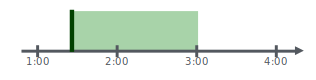
Já, se quisermos adicionar 90 minutos no dia do início do horário de verão (objeto gap), teremos:
gap + minutes(90)[1] "2018-03-11 03:00:00 EDT"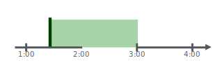
Veja que o período ignorou a inconsistência na linha do linha e trouxe o resultado como ela não existisse.
O mesmo aconteceria com a data e hora do objeto lap criado no fim do horário de verão:
lap + minutes(90)[1] "2018-11-04 02:00:00 EST"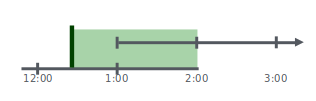
Situação identica aconteceria para o objeto leap criado em ano bisexto. Por exemplo, digamos que queremos somar um período de 1 ano.
leap + years(1)[1] "2020-03-01"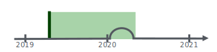
As funções de períodos para adicionar ou subtrair data e hora, tem o nome da unidade seguido de um “s”. Nos exemplos anterior somamos minutos usando minutes() e anos usando years().
A lista abaixo traz as funções que criam objetos períodos, ou sejam, que modelam eventos que acontecem em horário específico do relógio.
Podemos utilzar estes objetos para somar ou subtrair de objetos data ae hora.
| Função | Objeto Período |
|---|---|
| years(x = 1) | x anos |
| months(x) | x meses |
| weeks(x = 1) | x semanas |
| days(x = 1) | x dias |
| hours(x = 1) | x horas |
| minutes(x = 1) | x minutos |
| seconds(x = 1) | x segundos |
| milliseconds(x = 1) | x milisegundos |
| microseconds(x = 1) | x microsegundos |
| nanoseconds(x = 1) | x nanosegundos |
| picoseconds(x = 1) | x picosegundos |
Por exemplo, se quisermos criar um objeto período com 3 meses e 12 dias, fazemos:
p <- months(3) + days(12)
p[1] "3m 12d 0H 0M 0S"Para subtrair este período de um objeto data e hora, fazemos:
dt - p[1] "2017-08-16 12:00:00 UTC"Podemos também usar as funções abaixo para criar objetos período:
6.8.2.1 period
Use para automatizar a criação de períodos.
Por exemplo, para criar um objeto com período de 5 anos, podemos usar years(5) ou:
period(5, unit = "years")[1] "5y 0m 0d 0H 0M 0S"6.8.2.2 as.period
Use para transformar objetos de duração, intervalos e números para obejtos do tipo período:
Por exemplos, temos um número 5 e queremos criar um período de 5 dias, podemos fazer:
as.period(5, unit="days")[1] "5d 0H 0M 0S"6.8.2.3 period_to_seconds
Use para transformar um objeto do tipo período no total de número de segundos do período:
period_to_seconds(p)[1] 89262006.8.3 Duração
Diferentes dos objetos períodos, os objetos do tipo duração (duration), Acompanham a passagem do “tempo físico”, o que diverge do horário do relógio quando irregularidades na “linha do tempo” acontecem.
Por exemplo, digamos que temos nosso “dia normal” na linha do tempo e adicionarmos 90 minutos de duração:
nor + dminutes(90)[1] "2018-01-01 03:00:00 EST"
Até aqui, o resultado foi similar à adicionarmos um objeto do tipo período de 90 minutes.
Porém, veja o que acontece quando temos uma inconsistência na linha do tempo, como por exemplo nosso início de horário de verão em nosso objeto gap.
gap + dminutes(90)[1] "2018-03-11 04:00:00 EDT"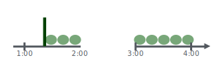
O mesmo acontece com nosso término de horário de verão em nosso objeto lap:
lap + dminutes(90)[1] "2018-11-04 01:00:00 EST"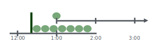
Ou mesmo com nosso ano bi-sexto:
leap[1] "2019-03-01"leap + dyears(1)[1] "2020-02-29 06:00:00 UTC"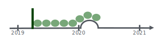
Podemos pensar em objetos de duração como um modelo físico, como uma vida útil de uma bateria. As durações são armazenados como segundos, que é a única unidade distância consistente.
Por exemplo, se criarmos um objeto duração equivalente à 14 dias, ele irá armazenar 1209600s.
dd <- ddays(14)
dd[1] "1209600s (~2 weeks)"
Dica
Há também uma classe chamada “difftime”, que se encontra no R base, ou seja, fora do pacote lubridate, usada para lidar com durações de tempo.
As funções para criar objetos de duração, são similares às dos objetos períodos, porém se iniciam com a letra “d”, veja:
| Função | Objeto Duração |
|---|---|
| dyears(x = 1) | 31536000x anos |
| dmonths(x) | 2629800x meses |
| dweeks(x = 1) | 604800x semanas |
| ddays(x = 1) | x86400x dias |
| dhours(x = 1) | 3600x horas |
| dminutes(x = 1) | 60x minutos |
| dseconds(x = 1) | x segundos |
| dmilliseconds(x = 1) | x X \(10^3\) milisegundos |
| dmicroseconds(x = 1) | x X \(10^6\) microsegundos |
| dnanoseconds(x = 1) | x X \(10^9\) nanosegundos |
| dpicoseconds(x = 1) | x X \(10 ^{12}\)picosegundos |
6.8.3.1 duration
Use para automatizar a criação de durações.
Por exemplo, para criar um objeto com duração de 5 anos, podemos usar dyears(5) ou:
duration(5, unit = "years")[1] "157788000s (~5 years)"6.8.3.2 as.duration
Use para transformar objetos de períodos, intervalos e números para objetos do tipo duração:
Por exemplos, temos um número 10 e queremos criar um período de 10 segundos, podemos fazer:
as.duration(10)[1] "10s"6.8.3.3 make_difftime
Use para criar um objeto difftime (R base) com um número específico de unidades.
make_difftime(3600)Time difference of 1 hours6.8.4 Intervalo
Objeto do tipo intervalo, representam um intervalo específico da “linha do tempo”, limitado pelo início e fim da data e hora. Se dividirmor o intervalo, pela pela duração teremos a distância física do tempo. Se dividirmos o intervalo pelo período, termeos a distância relativa ao relógio.
Podemos criar um objeto de intervalo, usando a função interval() ou o símbolo %--%.
i <- interval(ymd("2017-01-01"), d)
j <- d %--% ymd("2017-12-31")
i; j[1] 2017-01-01 UTC--2017-11-01 UTC[1] 2017-11-01 UTC--2017-12-31 UTCObserve pelo resultado acima, temos duas data para cada objeto, a da esquerda representa o início do intervalo e a da direito o fim.
Por exemplo, vamos pegar um dia normal na linha do tempo, representado pelo objeto nor e definirmos como o início do intervalo, e para o fim do intervalo usaremos nor mais um período de 90 minutos.
interval(nor, nor + minutes(90))[1] 2018-01-01 01:30:00 EST--2018-01-01 03:00:00 EST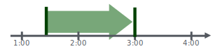
Agora, em uma linha do tempo inconsistente, o intervalo se mantém alinhado com o relógio. Veja como fica quando adicionamos um intervalo de 90 minutos quando temos o início de um horário de verão:
interval(gap, gap+minutes(90))[1] 2018-03-11 01:30:00 EST--2018-03-11 03:00:00 EDT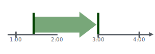
De forma similar, ocorre quando temos um intervalo quando há o término de um horário de verão:
interval(lap, lap+minutes(90))[1] 2018-11-04 00:30:00 EDT--2018-11-04 02:00:00 EST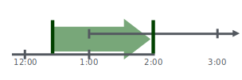
Ou mesmo quando temos um intervalo em um ano bi-sexto:
interval(leap, leap + years(1))[1] 2019-03-01 UTC--2020-03-01 UTC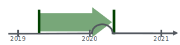
O pacote lubridate possui diversas funções para lidar com intervalo.
6.8.4.1 %within%
Use para identificar se um objeto do tipo intervalo ou data e hora “a” cai dentro de um interválo “b”
Por exemplo, se quisermos se a data e hora atual está dentro do intervalo “i”.
now () %within% i[1] FALSE6.8.4.2 int_start
Use para obter ou definir o início de um intervalo:
int_start(i)[1] "2017-01-01 UTC"int_start(i) <- now()
Nota
A função int_end() faz o oposto, ou seja, obtem ou define o fim de um intervalo.
int_aligns
Use para identificar se dois objetos do tipo intervalo estão alinhados, ou seja, compartilham de uma mesma data e hora.
int_aligns(i,j)[1] TRUENo exemplo acima, temos “2017-11-28” como início de um objeto e fim de outro, por isso dizemos que eles estão alinhados.
Nota
Se quisermos saber se estes objetos estão sobrepostos, ou seja, tem partes de uma intervá-lo que também fazem parte de outro, utilizamos a função int_overlaps().
6.8.4.3 int_diff
Use para transformar em intervalos, os valores que estão em um vetor de data e hora.
v <- c(dt, dt+100, dt+1000); int_diff(v)[1] 2017-11-28 12:00:00 UTC--2017-11-28 12:01:40 UTC
[2] 2017-11-28 12:01:40 UTC--2017-11-28 12:16:40 UTCint_flip
Use para colocar em ordem reversa a direção de um intervalo, ou seja, a dat e hora do fim vai para o início do intervalo e a data e hora do início vai para o final.
int_flip(i)[1] 2017-11-01 UTC--2022-08-24 22:04:14 UTCPara colocar em ordem padrão um intervalo de acordo com a linha do tempo, podemos usar a função int_standardize().
int_standardize(i)[1] 2017-11-01 UTC--2022-08-24 22:04:14 UTC6.8.4.4 int_length
Use para obter, em segundos, o tempo total de um intervalo:
int_length(i)[1] -1518842546.8.4.5 int_shift
Use para mover um intervalo para mais ou para menos na linha do tempo.
Por exemplo, se mover todo o intervalo (início e fim) em um dia antes da linha do tempo, podemos fazer:
int_shift(i, days(-1))[1] 2022-08-23 19:04:14 -03--2017-10-30 22:00:00 -026.8.4.6 as.interval
Use para criar um objeto intervalo com determinado periodo definindo uma dat e hora de início.
Por exemplo, para criarmos um intervalo de 1 dia, iniciando na data atual, podemos fazer:
as.interval(days(1), start = now())[1] 2022-08-24 19:04:14 -03--2022-08-25 19:04:14 -03
Nota
Podemos usar a função is.interval() para saber se um objeto é um intervalo válido ou não.
6.9 Datas Imaginárias
É importante observar que nem todos os anos tem 365 dias (ex: ano bi-sexto) e nem todos os minutos tem 60 segundos (ex: fim de horário de verão).
Isso é importante de ser observado, pois em alguns casos tentamos criar data imaginárias, como por exemplo “Fev 31”, adicionando um mês à “Jan 31”. As funções do pacote lubridate são inteligentes o suficiente e neste caso retornaria um valor NA:
jan31 <- ymd(20180131)
jan31 + months(1)[1] NA6.9.1 Aritmética dos meses
Porém, as vezes, intuitivamente, é isto que desejamos fazer, ou seja, adicionar “um mês” a “Jan 31”, mas que a função seja inteligente o suficiente para rolar para o último dia do mês.
Adicionar ou subtrair meses as vezes é uma tarefa difícil, pois temos meses de diferentes tamanhos (ex: 30, 31, 28 dias ou até 29). Por isso, em alguns casos é útil termos a possibildade de fazermos um ajustes automáticos.
Para isso usamos, ao invés do sinal de adição “+”, utilizamos o símbolo %m+% para adicionar meses (ou %m-% para subtrair). Veja:
jan31 %m+% months(1)[1] "2018-02-28"A função add_with_rollback() nos permite rolar a data da soma para o primeiro dia do mês seguinte (e não o último dia do mês anterior) usando o argumento roll_to_first.
add_with_rollback(jan31, months(1), roll_to_first = TRUE)[1] "2018-03-01"